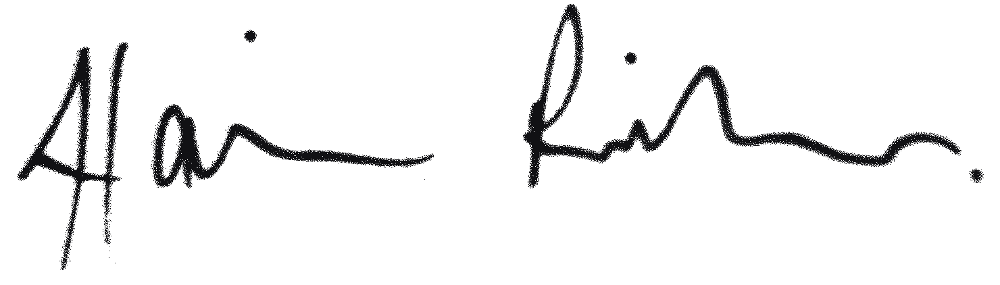

Alain
Ritter
„Marketing, das messbar bewegt.“
 Fullstack-Entwicklung · KI & Digitalisierung
Fullstack-Entwicklung · KI & Digitalisierung
Bewerbung als Digital Marketing & KI (m/w/d)

Werdegang
- KI-gestützte Webanwendungen von der Idee bis zum Deployment entwickelt; intelligente Algorithmen in Produktionsprozesse integriert.
- Maßgeschneiderte Plattformen, Kundenportale und interne Tools gebaut; Legacy-Software cloud-konform modernisiert.
2026
2025
- Product-Backlogs verantwortet, Anforderungen datenbasiert priorisiert und in skalierbare Features übersetzt — von der Idee bis zum Release.
- Als Schnittstelle zwischen Stakeholdern, Fachbereich und IT agiert; Entwicklungsteams gesteuert und Anwender:innen nach Release geschult.
2016
- Digitale Produkte mit HTML5, CSS3 und JavaScript umgesetzt — eng abgestimmt mit UX, Fachbereich und Entwicklung.
- Nutzerfeedback in Verbesserungen übersetzt; Performance und Usability von Webauftritten messbar optimiert.
2012
- Marketingkampagnen von der Konzeption bis zur Umsetzung begleitet — Print und Digital, mit Blick auf Zielgruppe und Performance.
- Kundenanforderungen koordiniert und in umsetzbare Konzepte übersetzt; Kampagnenergebnisse ausgewertet.
2009
- Gestaltung und Druckvorbereitung von Printmedien — Kataloge, Broschüren, Plakate, Anzeigen.
- Komplette Druckvorstufe: Satzspiegel, Farbmanagement, Reinzeichnung, Abstimmung mit Druckereien.
Fundament
An der Schnittstelle von Produkt, Marketing und Technik zuhause. Eigenverantwortung, Umsetzungsstärke und der Wille, Dinge wirklich abzuschließen: das treibt mich seit dem ersten Tag.
Fähigkeiten
KI im Marketing-Alltag
Ich setze KI gezielt ein: Content-Erstellung, Zielgruppenanalyse, Automatisierung von Routineaufgaben. Kein Hype, sondern gelebte Praxis aus aktuellen Projekten bei dataso GmbH — mit klarem Blick auf Qualität und Markenkonformität.
SEO, GEO & Digital Marketing
Website, Social Media, Newsletter, SEO und GEO (Generative Engine Optimization) — ich kenne digitale Kanäle aus eigener Praxis und halte mein Wissen zu KI-gestützter Suche aktuell. Ich denke in Zielgruppen und halte immer den Blick auf dem, was ankommt.
Technisches Fundament
Ich verstehe, was unter der Haube passiert: Webentwicklung, CMS, ERP-Anbindungen. Das macht mich zum verlässlichen Ansprechpartner zwischen Marketing, IT und Fachbereichen — ohne Missverständnisse in der Übersetzung.
Kampagnen & Projektumsetzung
Von der Idee bis zur veröffentlichten Kampagne: Konzept, Briefing, Koordination, Umsetzung und Auswertung. Über dreizehn Jahre Projekterfahrung — ich bringe Dinge zum Abschluss.
Schnelle Einarbeitung in neue Branchen
Technisches Umfeld ist mir nicht fremd — ich lerne schnell und stelle die richtigen Fragen. Das Onboarding sehe ich als Chance, Produkte und Prozesse wirklich zu verstehen und vom ersten Tag an sinnvoll beizutragen.
Gestaltung & visuelle Kommunikation
Adobe CC, Figma und ein geschärfter Blick für Typografie und Layout — ich gestalte Materialien, die professionell wirken und zur Marke passen. Print wie Digital.
Tools & Stack
Marketing, das bewegt — und Technik, die es möglich macht. KI ist für mich kein Buzzword, sondern Werkzeug mit echtem Hebel: schneller, präziser, wirkungsvoller kommunizieren.